Core · Video walkthrough
Build, validate and run a saved Records report
Choose a definition and columns, validate a finalized-record filter, download CSV, and add a grouped count.
Before you begin
- Authorized Records administration and a separate fictional training department.
- Existing permitted finalized records for the selected definition.
Chapters
Watch the walkthrough
Step 1
Find saved reports
From Records, open Reports and select Saved reports. This is where you keep a reusable report instead of rebuilding the same query each time. The page explains that a saved report queries one definition, can group or aggregate its records, and can export the results to C S V. Results still respect record visibility and restricted fields. Select New report to begin a separate fictional community coordination report.
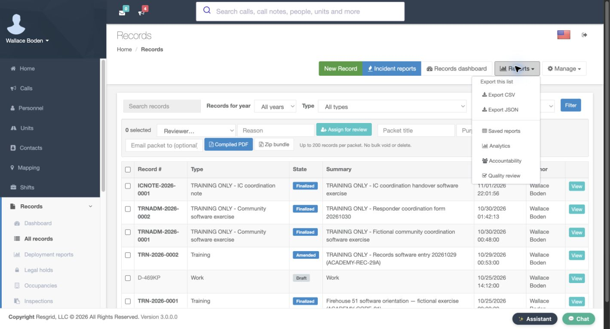
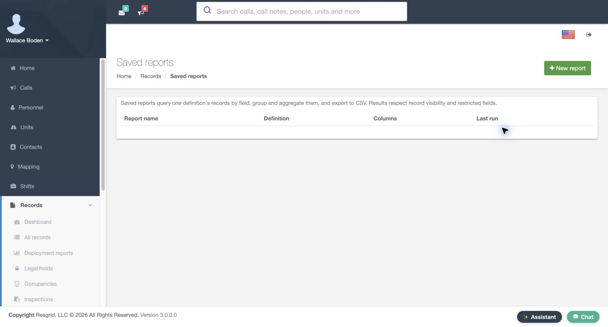
Practice
Find saved reports
Step 2
Choose the definition and fields
Give the report a recognizable name and description. Select the definition that owns the records you want to review. Here it is the training community software exercise. The Columns panel then offers record fields and that definition’s detail fields. Select record dot number, record dot state, and Summary. These three choices become the three result columns. Leave Notes unselected for this example. A clear report name helps supervisors choose the right recurring review.
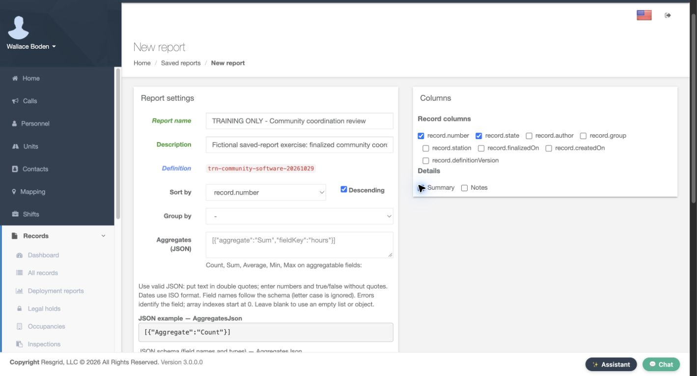
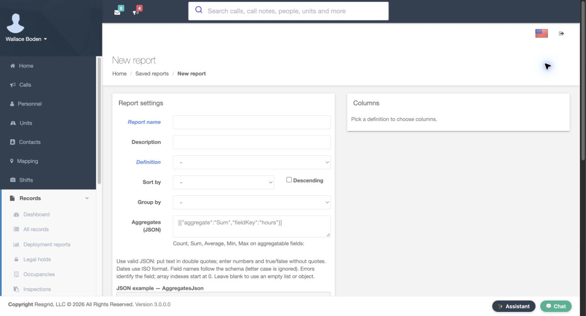
Practice
Choose the definition and fields
Step 3
Set the sort and keep detail rows
Set Sort by to record dot number and check Descending. The first version is a detail report, so leave Group by and Aggregates empty. This makes the newest training number appear first in the recorded result. Sorting determines the order of rows; grouping is a separate decision. Later we will edit this same report to count records by state without replacing the detail columns.
Practice
Set the sort and keep detail rows
Step 4
Filter finalized records and limit the result
Scroll to Filters. This example uses a J S O N array with FieldKey set to record dot state, Operator set to Equals, and Value set to Finalized. Match the quoted text and brackets shown in the form. The inline example and schema help explain the expected structure. Set Max rows to twenty-five. Leave Include drafts and Include restricted fields unchecked. Leave Version mappings empty for this exercise. These choices keep this report focused on a small, permitted set of finalized records.
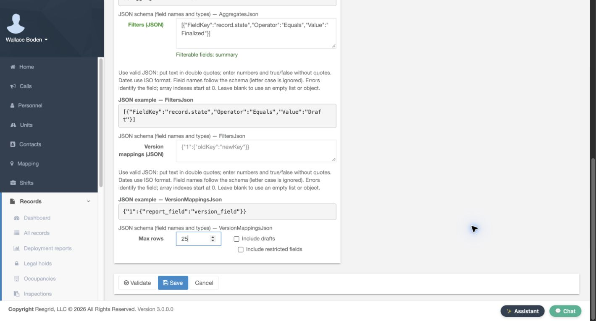
Practice
Filter finalized records and limit the result
Step 5
Validate before saving
Select Validate before saving. The page returns with The report is valid above the prepared settings and selected columns. Validation checks the report definition; it is not a result count and does not replace Save. Return to the bottom controls and select Save. The Saved reports page now shows Report saved, the report name, its definition, three columns, and the Run action. That saved row is the first readback that the reusable report exists.
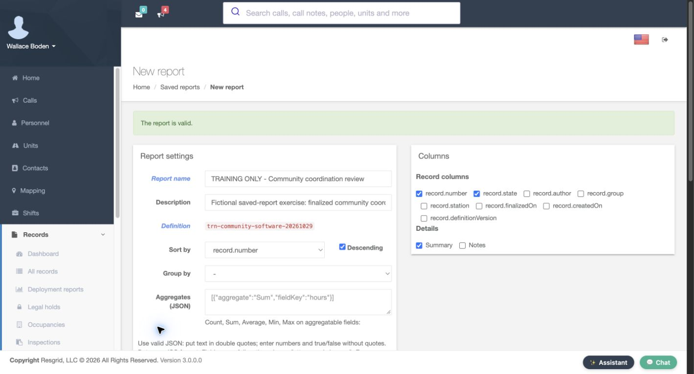
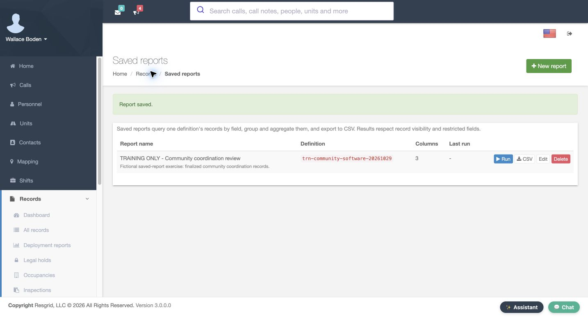
Practice
Validate before saving
Step 6
Run and download the detailed result
Select Run on the saved row. The result shows two of two rows, with Record number, State and Summary as configured. Both records are Finalized, and the larger training number is first. Compare those values with the purpose of the report before distributing its output. Use the C S V button on this result page to download the data. In this exercise the downloaded file contains the same three headers and the same two fictional records shown here.
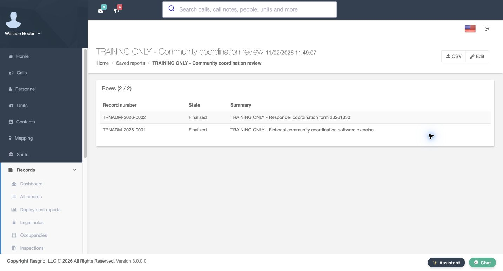
Practice
Run and download the detailed result
Step 7
Reopen and add a grouped count
Select Edit and review the persisted settings. The three column choices and descending record-number sort are still present. Set Group by to record dot state. In Aggregates, enter a J S O N array whose object has Aggregate set to Count, exactly as the form’s Count example shows. This asks a different question: how many matching records are in each state? The original detail columns remain selected.
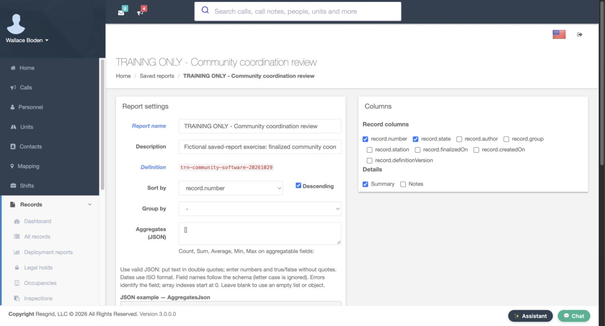
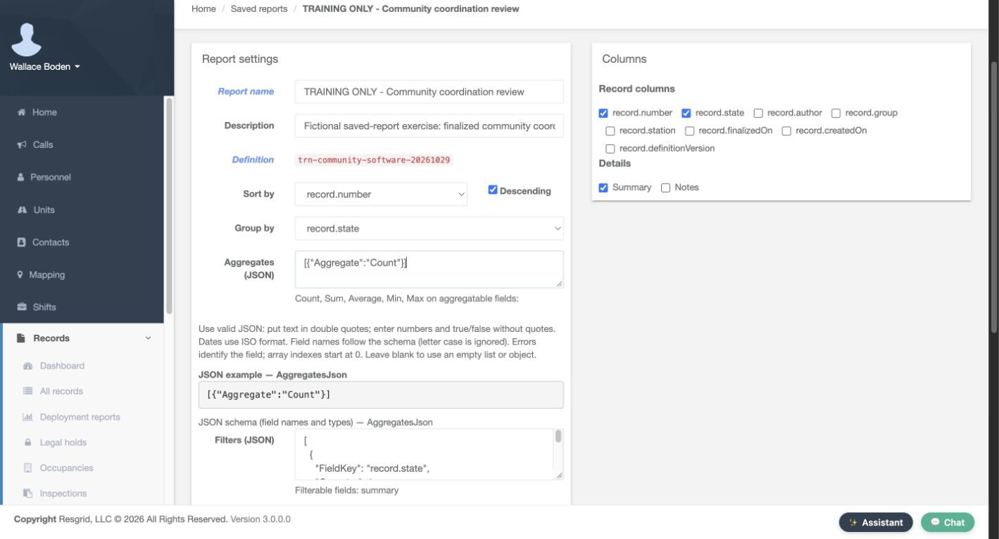
Practice
Reopen and add a grouped count
Step 8
Validate, save and rerun the changed report
Validate the changed report and confirm The report is valid. Use the same bottom Save control, then run the saved report again. The updated index identifies Group by record dot state and shows a Last run time. The new result has a Groups section: Finalized has a count of two. The detail section still shows the same two rows. Check both sections so that the summary count can be traced back to its records.
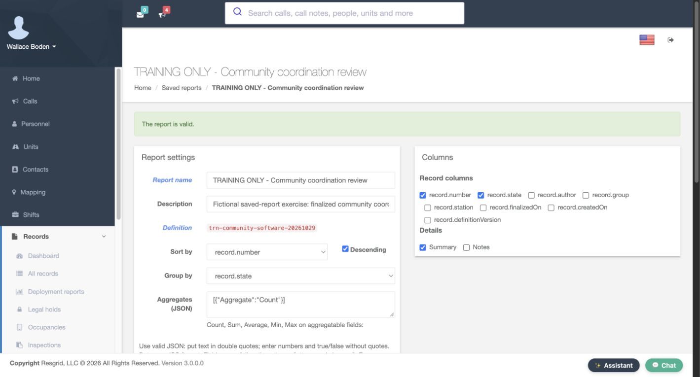
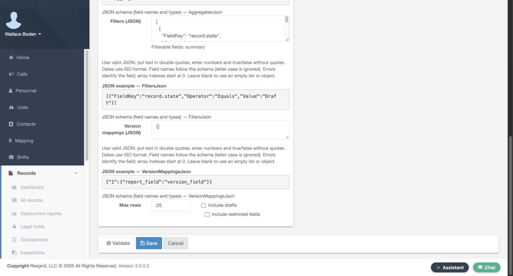
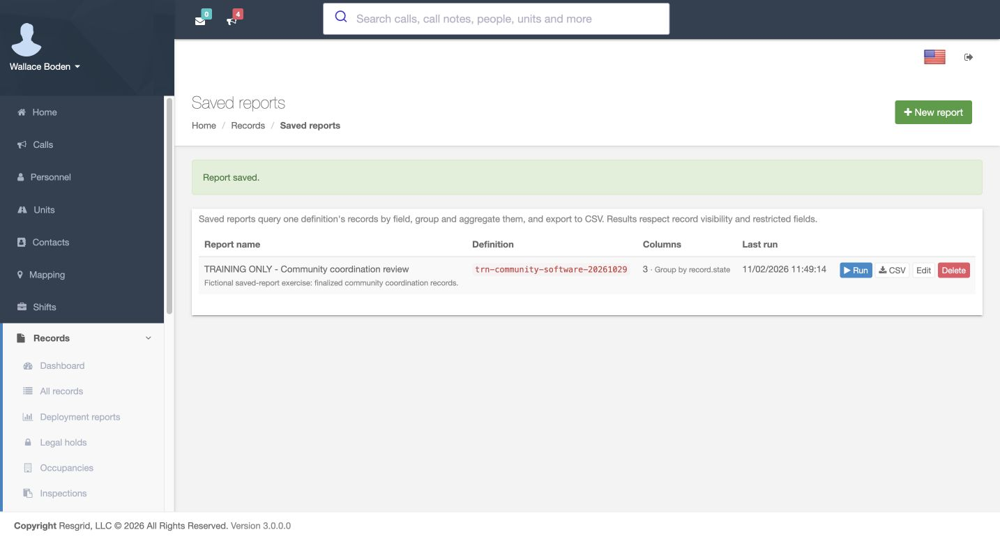
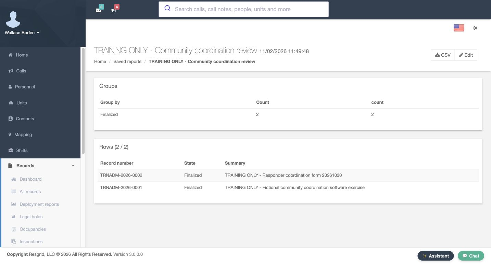
Practice
Validate, save and rerun the changed report
Step 9
Apply the review to your department
Use this pattern for the records your department actually maintains. A community paramedicine or mental health response team can review completed coordination records. Search-and-rescue teams can summarize activity forms, security departments can review service records, and wildland contractors or industrial emergency teams can track their operational paperwork. Fire and E M S departments can use the same controls. Choose the appropriate definition, select only needed fields, validate the settings, and verify the detail behind each grouped total.
Practice
Apply the review to your department
Examples for your department
- Fire / EMS
- Choose the appropriate department record definition and verify the matching output.
- Community response
- Choose the appropriate department record definition and verify the matching output.
- Search and rescue
- Choose the appropriate department record definition and verify the matching output.
- Security
- Choose the appropriate department record definition and verify the matching output.
- Wildland
- Choose the appropriate department record definition and verify the matching output.
- Industrial
- Choose the appropriate department record definition and verify the matching output.
Transcript
Download transcriptRead the complete transcript
Build, validate and run a saved Records report Audience: Department administrators, Records managers, Department supervisors Find saved reports From Records, open Reports and select Saved reports. This is where you keep a reusable report instead of rebuilding the same query each time. The page explains that a saved report queries one definition, can group or aggregate its records, and can export the results to C S V. Results still respect record visibility and restricted fields. Select New report to begin a separate fictional community coordination report. Practice: Find saved reports Choose the definition and fields Give the report a recognizable name and description. Select the definition that owns the records you want to review. Here it is the training community software exercise. The Columns panel then offers record fields and that definition’s detail fields. Select record dot number, record dot state, and Summary. These three choices become the three result columns. Leave Notes unselected for this example. A clear report name helps supervisors choose the right recurring review. Practice: Choose the definition and fields Set the sort and keep detail rows Set Sort by to record dot number and check Descending. The first version is a detail report, so leave Group by and Aggregates empty. This makes the newest training number appear first in the recorded result. Sorting determines the order of rows; grouping is a separate decision. Later we will edit this same report to count records by state without replacing the detail columns. Practice: Set the sort and keep detail rows Filter finalized records and limit the result Scroll to Filters. This example uses a J S O N array with FieldKey set to record dot state, Operator set to Equals, and Value set to Finalized. Match the quoted text and brackets shown in the form. The inline example and schema help explain the expected structure. Set Max rows to twenty-five. Leave Include drafts and Include restricted fields unchecked. Leave Version mappings empty for this exercise. These choices keep this report focused on a small, permitted set of finalized records. Practice: Filter finalized records and limit the result Validate before saving Select Validate before saving. The page returns with The report is valid above the prepared settings and selected columns. Validation checks the report definition; it is not a result count and does not replace Save. Return to the bottom controls and select Save. The Saved reports page now shows Report saved, the report name, its definition, three columns, and the Run action. That saved row is the first readback that the reusable report exists. Practice: Validate before saving Run and download the detailed result Select Run on the saved row. The result shows two of two rows, with Record number, State and Summary as configured. Both records are Finalized, and the larger training number is first. Compare those values with the purpose of the report before distributing its output. Use the C S V button on this result page to download the data. In this exercise the downloaded file contains the same three headers and the same two fictional records shown here. Practice: Run and download the detailed result Reopen and add a grouped count Select Edit and review the persisted settings. The three column choices and descending record-number sort are still present. Set Group by to record dot state. In Aggregates, enter a J S O N array whose object has Aggregate set to Count, exactly as the form’s Count example shows. This asks a different question: how many matching records are in each state? The original detail columns remain selected. Practice: Reopen and add a grouped count Validate, save and rerun the changed report Validate the changed report and confirm The report is valid. Use the same bottom Save control, then run the saved report again. The updated index identifies Group by record dot state and shows a Last run time. The new result has a Groups section: Finalized has a count of two. The detail section still shows the same two rows. Check both sections so that the summary count can be traced back to its records. Practice: Validate, save and rerun the changed report Apply the review to your department Use this pattern for the records your department actually maintains. A community paramedicine or mental health response team can review completed coordination records. Search-and-rescue teams can summarize activity forms, security departments can review service records, and wildland contractors or industrial emergency teams can track their operational paperwork. Fire and E M S departments can use the same controls. Choose the appropriate definition, select only needed fields, validate the settings, and verify the detail behind each grouped total. Practice: Apply the review to your department Examples for your department Fire / EMS: Choose the appropriate department record definition and verify the matching output. Community response: Choose the appropriate department record definition and verify the matching output. Search and rescue: Choose the appropriate department record definition and verify the matching output. Security: Choose the appropriate department record definition and verify the matching output. Wildland: Choose the appropriate department record definition and verify the matching output. Industrial: Choose the appropriate department record definition and verify the matching output.